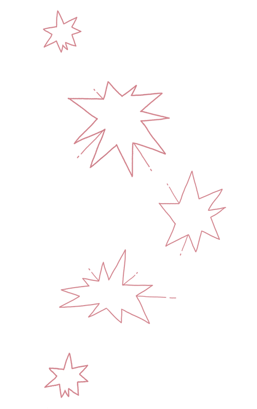

Be patient & read :)
Madam X, previously a teacher aged 80, lost so much interest in the daily activities after her deceased husband. Youth were her favorite flower that had been cut so harshly, uprooting mercilessly her energy, beauty and even hygiene.
Right now, she can't even take her daily bath with an easy mind. She is always reminded of her hospitalized friend because she fell while trying to escalate the tall bathtub. She obviously can't trust her shaking legs, nor her decreasing health as she tends to get dizzier these days. What if she bangs her head in the bathroom and gets unconscious all alone?
Her failing body needs to rely more and more on artifice. She saw several commercials about adapted house gadgets based on new technologies with safe lifts and non-slip flooring. Those gadgets hold the chance of the life she dreamed of. Thereby, she wants to install a step-stair to facilitate such a primary task like bathing.
Her new aspirations are forged in the heat of her continuous battle with fear, anxiety, weakness, and aging-related problems. Thus, she became eager to test new gadgets/ products to the point that she can no longer estimate the risk behind such a decision.
Madam X has always been an inquisitive person with an adventurous spirit. But her daughter fearing for her safety did not allow her to install the step-stair as she might fall because of the slippery wet surface. Breaking her leg or getting injured at her age is tremendously dangerous.
